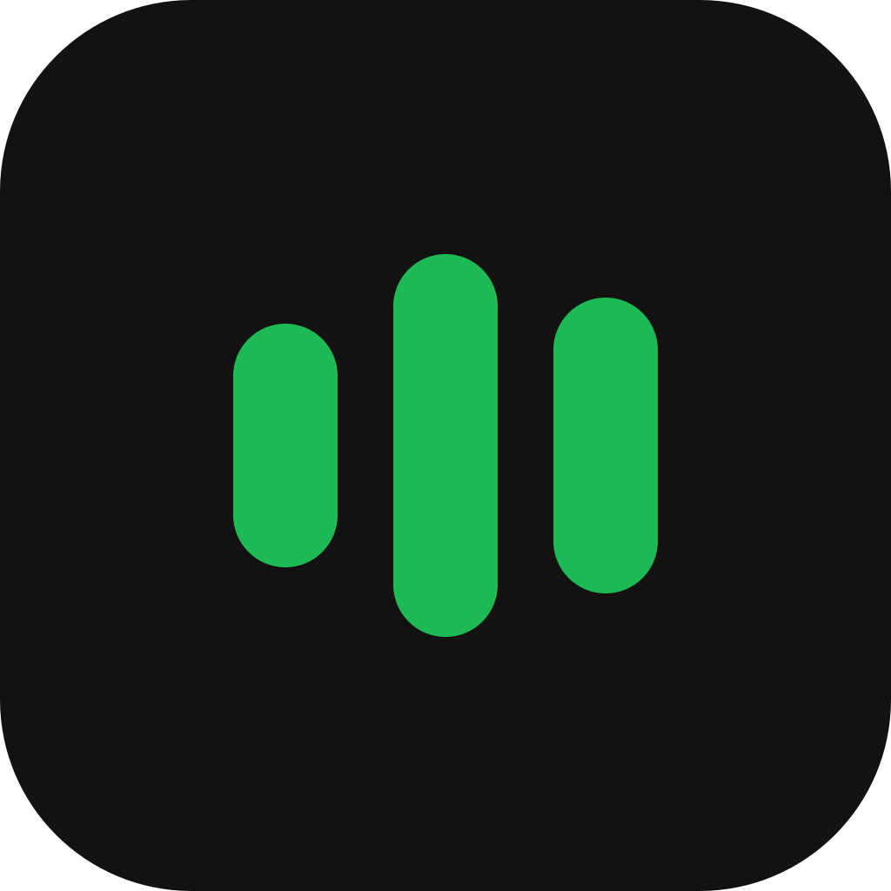

spotmini
A tiny, always-on-top Spotify bar.
Nangs - Tame Impala
0:15/1:47
♫
⚙
✕
preview
What it does
- Shows the current song, artist and progress
- Play, skip, shuffle, loop and volume — all on global hotkeys
- Playlist picker with search, and song search
- Custom colours, edge snapping, auto-fit width
- Works with whatever device you're playing on, phone included
Setup
The app isn't signed with a paid Apple certificate, so macOS blocks it on first open. To get past that:
- Unzip it and move spotmini.app to Applications.
- Remove the quarantine flag macOS attached on download:
xattr -cr /Applications/spotmini.app - Open it normally.
- For the hotkeys, allow it under System Settings → Privacy & Security → Accessibility, then quit and reopen.
Steps 2 and 4 need repeating on each update — unsigned builds are tied to the exact binary.
The app isn't code-signed, so Windows shows a publisher warning on first run. Click More info → Run anyway.
Defender may also flag it as a false positive; if so, allow it under Virus & threat protection → Protection history.
Requirements
- A Spotify account — Premium for playback control
- Log in once; it stays signed in after that